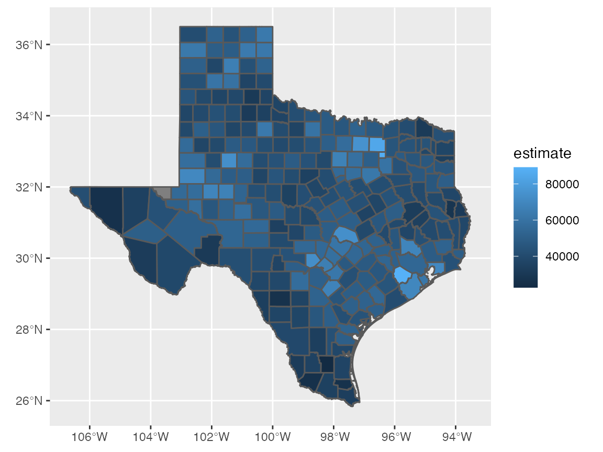
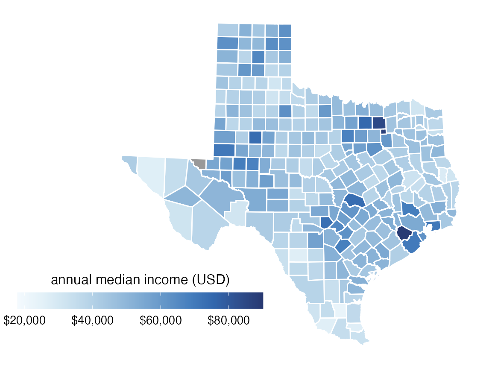

For this example, we will use the following packages.
library(tidyverse)
library(cowplot) # for theme_map()
library(colorspace) # for scale_fill_continuous_sequential()
library(sf) # for manipulation of simple features objectsThe dataset is provided as practicalgg::texas_income. Let’s look at it in table form and in a simple longitude–latitude plot.
# attach data set
data(texas_income, package = "practicalgg")
texas_income## Simple feature collection with 254 features and 5 fields
## geometry type: MULTIPOLYGON
## dimension: XY
## bbox: xmin: -106.6456 ymin: 25.83738 xmax: -93.50829 ymax: 36.5007
## geographic CRS: NAD83
## First 10 features:
## GEOID NAME variable estimate moe
## 1 48001 Anderson County, Texas B19013_001 41327 1842
## 2 48003 Andrews County, Texas B19013_001 70423 6038
## 3 48005 Angelina County, Texas B19013_001 44223 1611
## 4 48007 Aransas County, Texas B19013_001 41690 3678
## 5 48009 Archer County, Texas B19013_001 60275 5182
## 6 48011 Armstrong County, Texas B19013_001 59737 4968
## 7 48013 Atascosa County, Texas B19013_001 52192 3005
## 8 48015 Austin County, Texas B19013_001 53687 3810
## 9 48017 Bailey County, Texas B19013_001 37397 8652
## 10 48019 Bandera County, Texas B19013_001 49863 7193
## geometry
## 1 MULTIPOLYGON (((-96.0648 31...
## 2 MULTIPOLYGON (((-103.0647 3...
## 3 MULTIPOLYGON (((-95.00488 3...
## 4 MULTIPOLYGON (((-96.8229 28...
## 5 MULTIPOLYGON (((-98.95382 3...
## 6 MULTIPOLYGON (((-101.6294 3...
## 7 MULTIPOLYGON (((-98.80479 2...
## 8 MULTIPOLYGON (((-96.62085 3...
## 9 MULTIPOLYGON (((-103.0469 3...
## 10 MULTIPOLYGON (((-99.60332 2...
ggplot(texas_income, aes(fill = estimate)) +
geom_sf()
Transform to more appropriate coordinate system, EPSG:3083, a Texas-centric Albers equal area projection.
# EPSG:3083 Texas-centric Albers equal area
# https://epsg.io/3083
texas_crs <- "+proj=aea +lat_1=27.5 +lat_2=35 +lat_0=18 +lon_0=-100 +x_0=1500000 +y_0=6000000 +ellps=GRS80 +towgs84=0,0,0,0,0,0,0 +units=m +no_defs"
texas_transf <- st_transform(texas_income, crs = texas_crs)
ggplot(texas_transf, aes(fill = estimate)) +
geom_sf()
Use different color scale.
ggplot(texas_transf, aes(fill = estimate)) +
geom_sf(color = "white") +
scale_fill_continuous_sequential(
palette = "Blues", rev = TRUE,
na.value = "grey60"
)We want the legend to be oriented horizontally and placed to the lower left of Texas. Therefore, we need to change the plot limits to create space for the legend. We choose limits of -110, -93.5 degrees longitude at 30 degrees latitude, transformed to X, Y with EPSG:3083. We could do the transformation with st_transform(), as above, or we can do it manually at https://epsg.io/transform.
# https://epsg.io/transform#s_srs=4326&t_srs=3083&x=-110.0000000&y=30.0000000
# https://epsg.io/transform#s_srs=4326&t_srs=3083&x=-93.5000000&y=30.0000000
# (-110, 30) is (538250.08, 7363459.44)
# (-93.5, 30) is (2125629.02, 7338358.43)
texas_xlim <- c(538250, 2125629)
ggplot(texas_transf, aes(fill = estimate)) +
geom_sf(color = "white") +
coord_sf(xlim = texas_xlim) +
scale_fill_continuous_sequential(
palette = "Blues", rev = TRUE,
na.value = "grey60"
)
Now we can move the legend into place.
ggplot(texas_transf, aes(fill = estimate)) +
geom_sf(color = "white") +
coord_sf(xlim = texas_xlim) +
scale_fill_continuous_sequential(
palette = "Blues", rev = TRUE,
na.value = "grey60",
guide = guide_colorbar(
direction = "horizontal",
label.position = "bottom",
title.position = "top",
barwidth = grid::unit(3.0, "in"),
barheight = grid::unit(0.2, "in")
)
) +
theme(
legend.title.align = 0.5,
legend.text.align = 0.5,
legend.justification = c(0, 0),
legend.position = c(0.02, 0.1)
)
Fine-tune legend title and breaks.
ggplot(texas_transf, aes(fill = estimate)) +
geom_sf(color = "white") +
coord_sf(xlim = texas_xlim) +
scale_fill_continuous_sequential(
palette = "Blues", rev = TRUE,
na.value = "grey60",
name = "annual median income (USD)",
limits = c(18000, 90000),
breaks = 20000*c(1:4),
labels = c("$20,000", "$40,000", "$60,000", "$80,000"),
guide = guide_colorbar(
direction = "horizontal",
label.position = "bottom",
title.position = "top",
barwidth = grid::unit(3.0, "in"),
barheight = grid::unit(0.2, "in")
)
) +
theme(
legend.title.align = 0.5,
legend.text.align = 0.5,
legend.justification = c(0, 0),
legend.position = c(0.02, 0.1)
)Switch the theme to a simple, mostly empty theme suitable for a map.
ggplot(texas_transf, aes(fill = estimate)) +
geom_sf(color = "white") +
coord_sf(xlim = texas_xlim) +
scale_fill_continuous_sequential(
palette = "Blues", rev = TRUE,
na.value = "grey60",
name = "annual median income (USD)",
limits = c(18000, 90000),
breaks = 20000*c(1:4),
labels = c("$20,000", "$40,000", "$60,000", "$80,000"),
guide = guide_colorbar(
direction = "horizontal",
label.position = "bottom",
title.position = "top",
barwidth = grid::unit(3.0, "in"),
barheight = grid::unit(0.2, "in")
)
) +
theme_map(12) +
theme(
legend.title.align = 0.5,
legend.text.align = 0.5,
legend.justification = c(0, 0),
legend.position = c(0.02, 0.1)
)